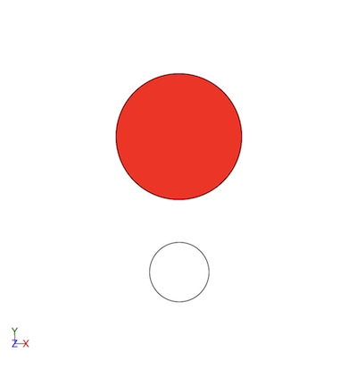
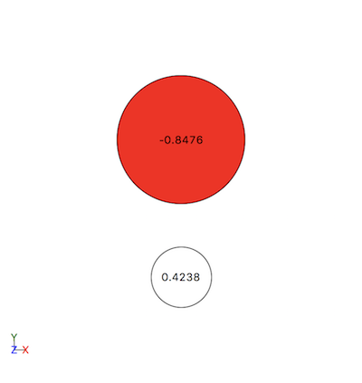

Visualising a Universe
After defining the configuration and topology of a Universe, either manually or by reading a configuration file, it is useful to visualize the setup. The view function provides a simple molecular visualizer for establishing the accuracy of a simulation setup. It can be used to visualize one or more Atom objects, one or more Molecule objects, or a Universe.
To demonstrate visualisation, we start by creating some atoms.
[ ]:
from MDMC.MD import Atom, Molecule, Bond, Universe
H1 = Atom('H', charge=0.4238)
O = Atom('O', position=(0., 0.81649, 0.57736), charge=-0.8476)
atoms = [H1, O]
universe = Universe(10.)
universe.add_structure(H1)
universe.add_structure(O)
Visualisation is done through ASE, so any format supported by ASE is supported here. We will demonstrate two different viewers:
'X3D':'X3D' is the default viewer when view is called.'ASE':As mentioned above, calling view without passing viewer uses 'X3D' as the viewer, which displays inline in a Jupyter notebook. It should display:
[ ]:
from MDMC.gui import view
view(atoms)
Alternatively, the 'ASE' viewer can be selected. This will open an external window, and the execution of any further Jupyter notebook cells will be paused until this window is closed. This execution being paused at the view(atoms, viewer='ASE') cell is denoted by a [*] to the left of the cell.
[ ]:
view(atoms, viewer='ASE')
The ASE GUI should show:
Within the ASE GUI, the View menu has options which assist in checking the setup. For example, View -> Show Labels -> Charges, displays the charges on each atom:
There are also options to show the elements or atom ID labels.
Bonds are also displayed in both viewers. To see this in action, add a Bond between the atoms and view the atoms again:
[ ]:
HO_bond = Bond((H1, O))
view(atoms)
And using the 'ASE' viewer, press Ctrl+B to show bonds:
[ ]:
view(atoms, viewer='ASE')
It is important to note that while ``Bond`` objects are displayed, ``BondAngle`` and ``DihedralAngle`` objects are not currently shown.
As mentioned above, Molecule objects can also be passed to view:
[ ]:
H2 = H1.copy(position=(0., 1.63298, 0.))
water = Molecule(atoms=[H1, O, H2])
view(water)
And again with the 'ASE' viewer:
[ ]:
view(water, viewer='ASE')
Finally we visualise a Universe; first, we create one and fill it with copies of the water Molecule.
[ ]:
from MDMC.MD import Universe
universe = Universe(10.)
universe.fill(water, num_density=0.0336)
And then pass it to the 'X3DOM' viewer:
[ ]:
view(universe)
And again with the 'ASE' viewer, which also shows the bounds of the Universe with a dashed line:
[ ]:
view(universe, viewer='ASE')
When viewing a Universe, the bounds are represented by a dashed line. The Universe, tiled with water molecules, should appear as: